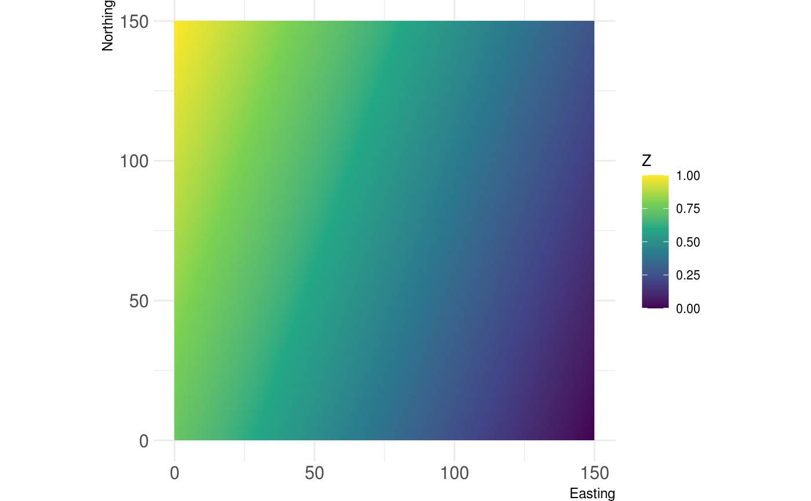
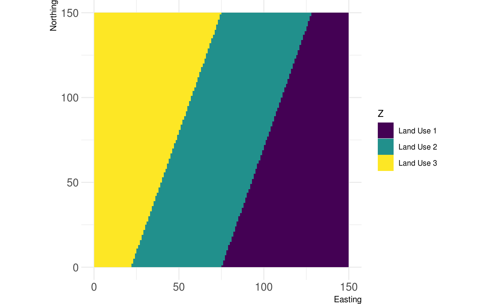
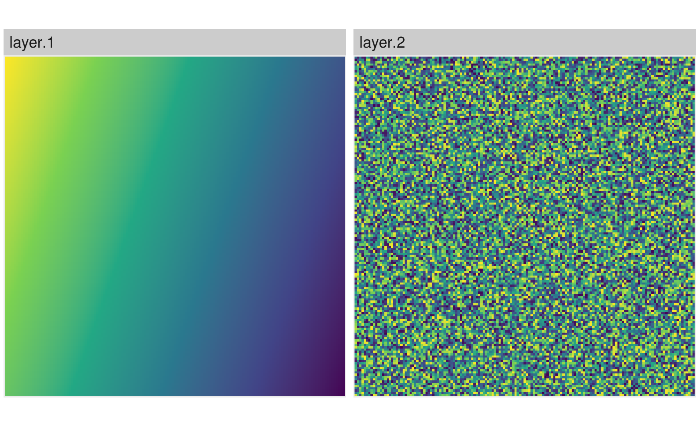

Plot a Raster* object with the NLMR default theme (as ggplot).
show_landscape(x, xlab, ylab, discrete, unique_scales, n_col, n_row, ...) # S3 method for RasterLayer show_landscape(x, xlab = "Easting", ylab = "Northing", discrete = FALSE, ...) # S3 method for list show_landscape(x, xlab = "Easting", ylab = "Northing", discrete = FALSE, unique_scales = FALSE, n_col = NULL, n_row = NULL, ...) # S3 method for RasterStack show_landscape(x, xlab = "Easting", ylab = "Northing", discrete = FALSE, unique_scales = FALSE, n_col = NULL, n_row = NULL, ...) # S3 method for RasterBrick show_landscape(x, xlab = "Easting", ylab = "Northing", discrete = FALSE, unique_scales = FALSE, n_col = NULL, n_row = NULL, ...)
Arguments
| x | Raster* object |
|---|---|
| xlab | x axis label, default "Easting" |
| ylab | y axis label, default "Northing" |
| discrete | If TRUE, the function plots a raster with a discrete legend. |
| unique_scales | If TRUE and multiple raster are to be visualized, each facet can have a unique color scale for its fill |
| n_col | If multiple rasters are to be visualized, n_col controls the number of columns for the facet |
| n_row | If multiple rasters are to be visualized, n_row controls the number of rows for the facet |
| ... | Arguments for |
Value
ggplot2 Object
Examples
# \dontrun{ x <- gradient_landscape # classify y <- util_classify(gradient_landscape, n = 3, level_names = c("Land Use 1", "Land Use 2", "Land Use 3"))#>#>show_landscape(x)show_landscape(y, discrete = TRUE)#> Error: At least one layer must contain all faceting variables: `id`. #> * Plot is missing `id` #> * Layer 1 is missing `id`#> Warning: Removed 598 rows containing missing values (geom_raster).#> Error: At least one layer must contain all faceting variables: `id`. #> * Plot is missing `id` #> * Layer 1 is missing `id`# }